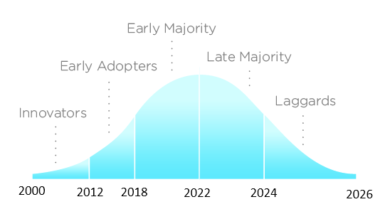

Moving away from SAS
An opportunity to modernise
the practices of statisticians
2024-11-29
A journey to R adoption in an NSI
Diffusion of Innovations (Rogers, 1962)

Source: Wikimedia Commons, licensed under CC BY-SA 3.0 Unported
{kind=link}
A journey to R adoption in an NSI
R adoption at INSEE (France): 1500 statisticians
Source: Wikimedia Commons modified by author, licensed under CC BY-SA 3.0 Unported
Innovators’ motivators
- ~2000-2012 Innovators’ motivators:
- graphical capabilities (
lattice) - literate programming (
Sweave()) - spatial data analysis (
sp)
- graphical capabilities (
From Innovators to Early Adopters
- 2012:
- first R user group in Paris (FL\tauR)
- the use of R officially recognized internally
- first RStudio server
- 2012-2018 Early adopters’ motivators
- RStudio IDE
- graphical capabilities (
ggplot2) - literate programming (
knitr,rmarkdown) - dataviz web applications (
shiny) - data wrangling (
tidyverse,data.table) - first packages released on CRAN (
icarus,btb,gustave)
Getting the Early Majority
- 2018: all open source languages officially recognized
- 2018-2022: a collective skills upgrade
Moving away from proprietary languages
- 2022:
- 50% of the statistical scripts already been rewritten in R (voluntary initiatives)
- decision to use only open source languages from 2026 onwards (motivated by the increase in licensing costs)
- new internal environment for statisticians and data scientists based on Onyxia (vendor lock-ins have moved from languages to platforms)
parquetfiles to store and disseminate data (preference for a cross language file format)
From early majority to full adoption
- 2022-2026:
- mass trainings for late majority and laggards
- new trainings on Best Practices with R, Bringing Data Science Projects into Production
- an active community helping each other
- rewriting of the remaining codes (thanks to ChatGPT for helping us understand SAS programs)
The main challenge we faced
Lack of alignment between IT and statisticians
- IT teams are risk averse: they are paid to provide stable IT environments
- providing a working environment for R and python users is challenging: open source languages are unstable by nature
- R/python users need flexibility/IT need stability
Can we find a way out?
Tips for dealing with IT
Dean Marchiori’s post: “5 tips for dealing with IT”:
- Have empathy: understand them and what they’re facing
- Political alignment: convince your manager to help you with IT
- Find supporters in IT
- Find (safe) workaround: there is always a grey area between what is allowed and what is not
- Buy commercially licensed software
Tips for dealing with IT
Dean Marchiori’s post: “5 tips for dealing with IT”:
- Have empathy: understand them and what they’re facing
- Political alignment: convince your manager to help you with IT
- Find supporters in IT
- Find (safe) workaround: there is always a grey area between what is allowed and what is not
Buy commercially licensed softwarenot always necessary
How did we align IT and statisticians?
- Political alignment: creation of an innovation team in the IT Department
- Mutual empathy
- Statisticians’ most valuable supporters
- Create workarounds for statisticians: sspcloud.fr
Towards a new deal between IT and statisticians
An official statistical office is a socio-technical system. We need:
- people (business matter, methods, IT)
- data
- hardware
- software
- law and regulations
The technology that opened us new horizons

The benefits of containers
- from the outside, they are all identical: IT teams can learn to manage them routinely
- inside, you can put whatever you like (any R version, R packages, system dependencies…)
- containers are now the basis of all data platforms: IT in official statistics offices must learn to deal with them
- containers also used in DevOps platforms
A new deal between IT and statisticians
- IT cares about containers orchestration and possible vulnerabilities inside them
- IT offers a flexible container based platform (many versions of R, IDEs…) and offers support
- IT recognizes statisticians as “citizen developers”
- Statisticians may receive the power to customize containers (add/remove pieces of software)
With great power comes great responsibility
(Spider-Man)
The modern statistician: a proposal
- Uses open source languages
- Adopts best practices for software development (version control, modular code, tests)
- Manages the dependencies of her projects: packages and system dependencies (
renv,pak,rix…) - Has the right to build a docker image (linux 101)
- Has the right to orchestrate workflows and deploy applications in production (CI/CD)
If this is too much for statisticians, we may need to integrate IT engineers into the business/methods units
The challenges we are facing
- A wall of confusion between statisticians:
- some statisticians (mostly managers) saw R a new statistical “tool”. They focus on the product, not the process.
- other statisticians (mostly the younger ones) saw R as a programming language and considered themselves as developers. They care about the process
- Statistical training lacks solid basis in computer science:
- Academics have become too specialized
- Few academics also have a production experience
Take away messages
- Statisticians are (citizen) developers and must be trained as developers
- Middle management must also be trained
- Statisticians must become IT best friends
The Use of R in Official Statistics 2024 Conference